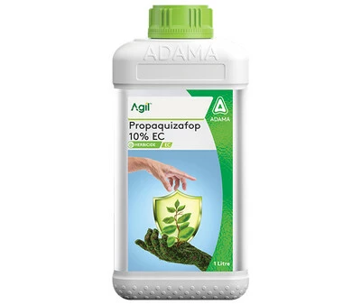

With Propaquizafop 10% Agil selectively controls grassy weeds in a wide range of broad-leaf crops like Soybean, Onion, Black gram, Chickpea, and more!
Technical Name: Propaquizafop 10% EC
Major Crops: Black gram, Chickpea, Cluster bean, Groundnut, Jute, Onion, Potato, Sesamum, Soybean, Tomato, Chilli, Sugarbeet, Oilseed rape, Sunflower, other field crops, vegetables, fruit trees...
Mode of action: Propaquizafop is a post-emergence herbicide that targets and controls grass weeds. It inhibits the enzyme acetyl-CoA carboxylase (ACCase) in grasses, which is essential for fatty acid synthesis. This inhibition disrupts the production of lipids, crucial components of cell membranes and other cellular structures, leading to the cessation of cell growth and division. The targeted weeds eventually die due to the inability to produce new cells.
Target Pest:
Annual Grasses: Barnyardgrass (Echinochloa spp.), Foxtail (Setaria spp.), Crabgrass (Digitaria spp.), Panicum species (e.g., Panicums).
Perennial Grasses: Johnsongrass (Sorghum halepense), Quackgrass (Elymus repens), Couchgrass (Elytrigia repens).
Presentation Available: 100ml, 250ml, 500ml, 1ltr.
Company: Adama